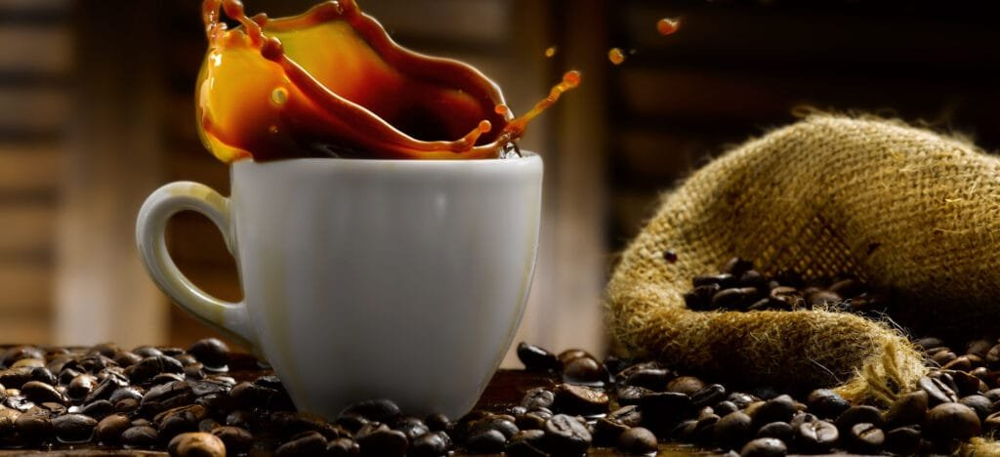
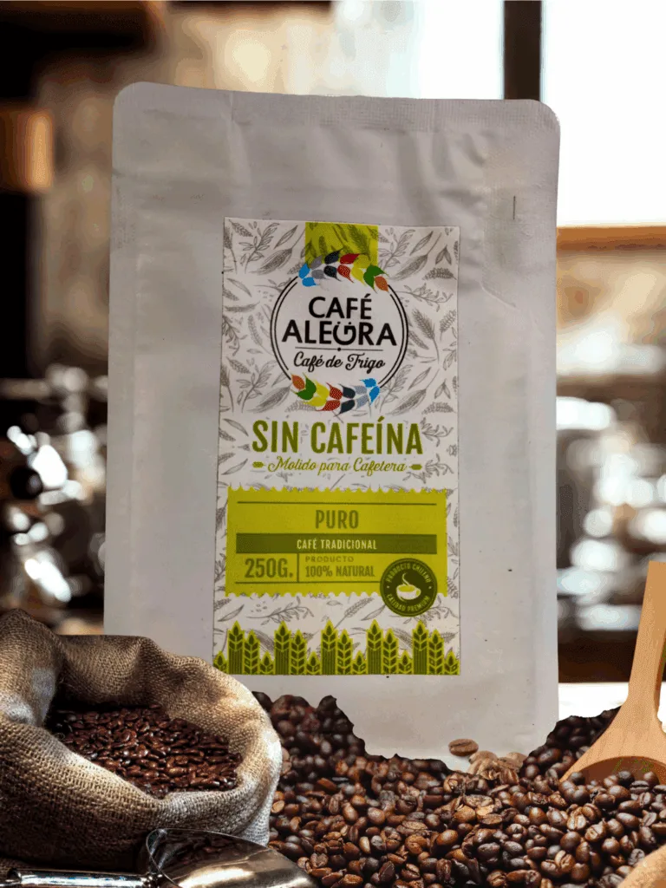

InicioCafés de tradición chilena
Trigo · HigosCafés de tradición chilena
Dos tradiciones de nuestra tierra, rescatadas y reinterpretadas desde la VI Región: el café de trigo y el café de higos.
Café de higos
Una tradición que se transforma en taza
Una infusión tradicional chilena elaborada a partir de higos seleccionados, cosechados y deshidratados al sol antes de su tueste en pailas de cobre. Naturalmente libre de cafeína y con suaves notas acarameladas.
Proceso artesanal
- Higos seleccionados
- Deshidratados al sol
- Tostados artesanalmente
- Molienda para infusión


Café de trigo
El trigo que se rescató para tu taza
Bebida tradicional campesina elaborada con trigo entero tostado a fuego lento. Café Alegra rescata esta receta centenaria de la VI Región para ofrecer una alternativa cálida, digestiva y 100 % libre de cafeína.